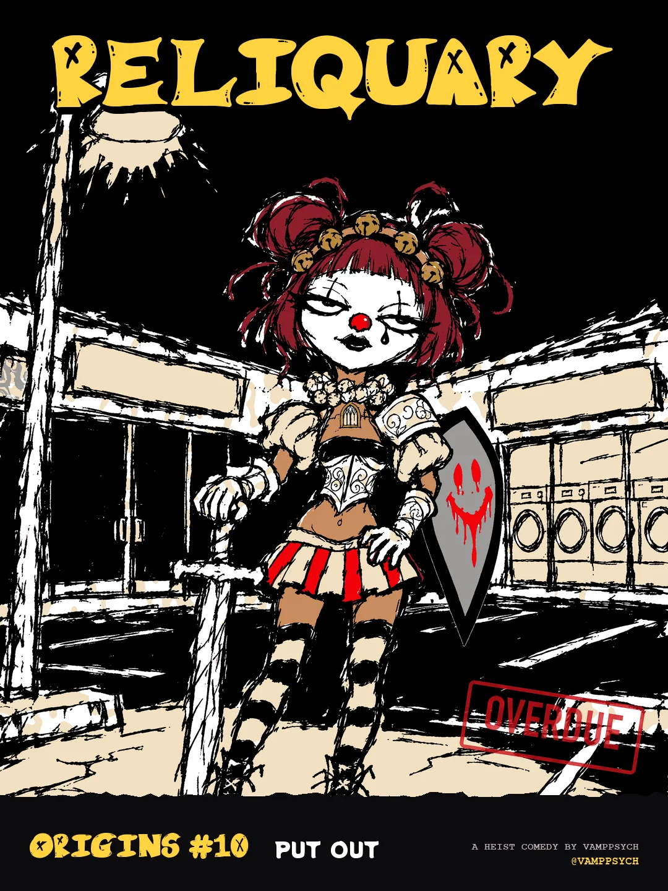
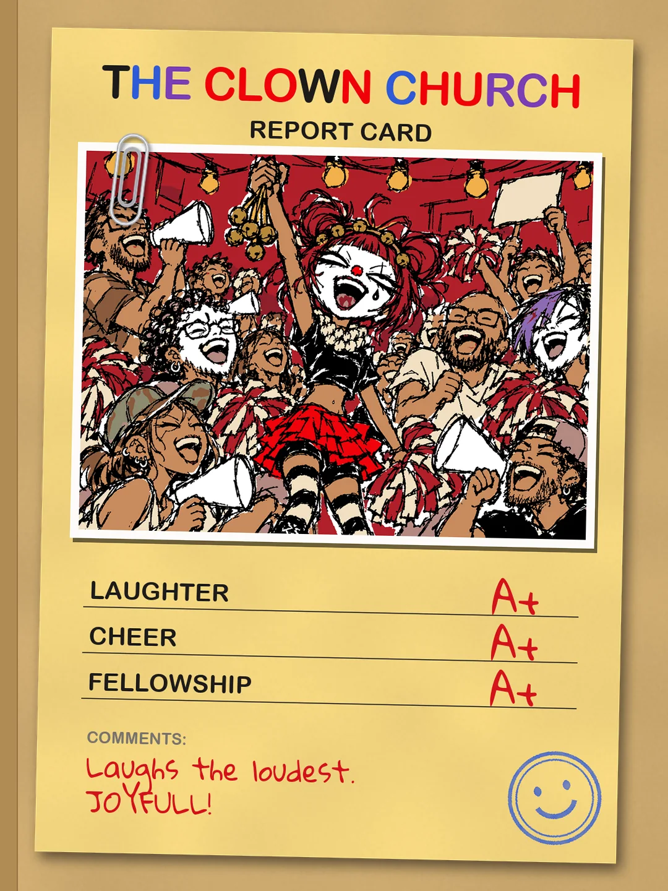
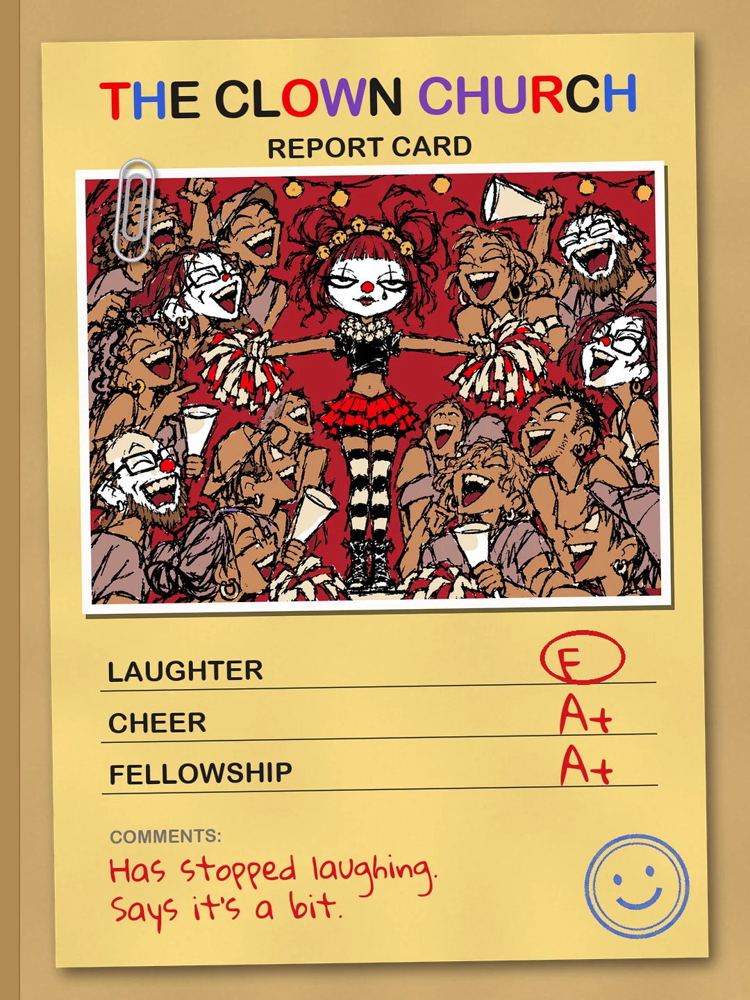
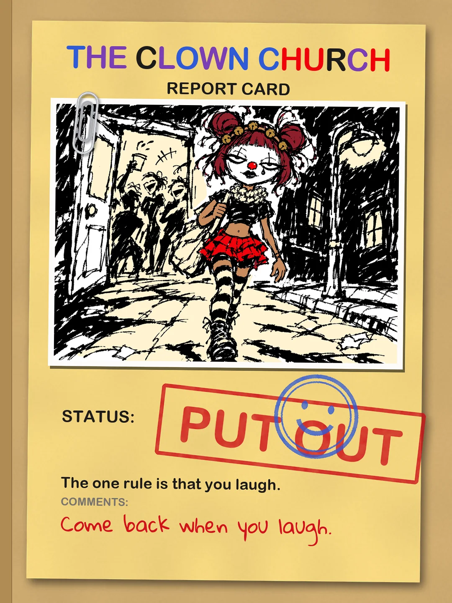
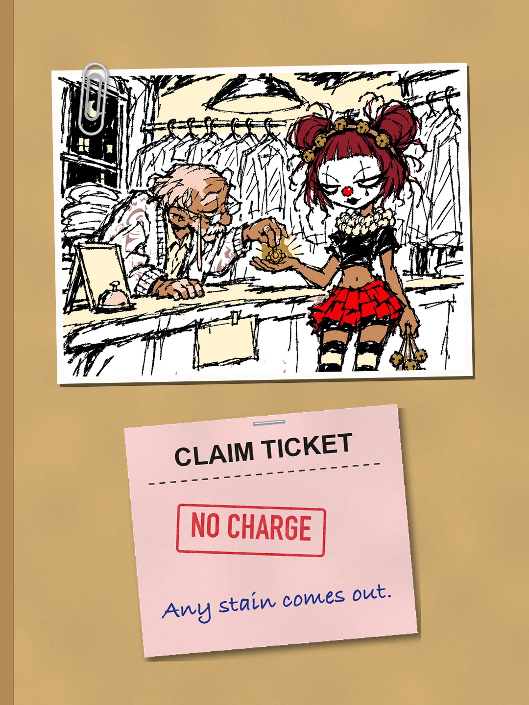
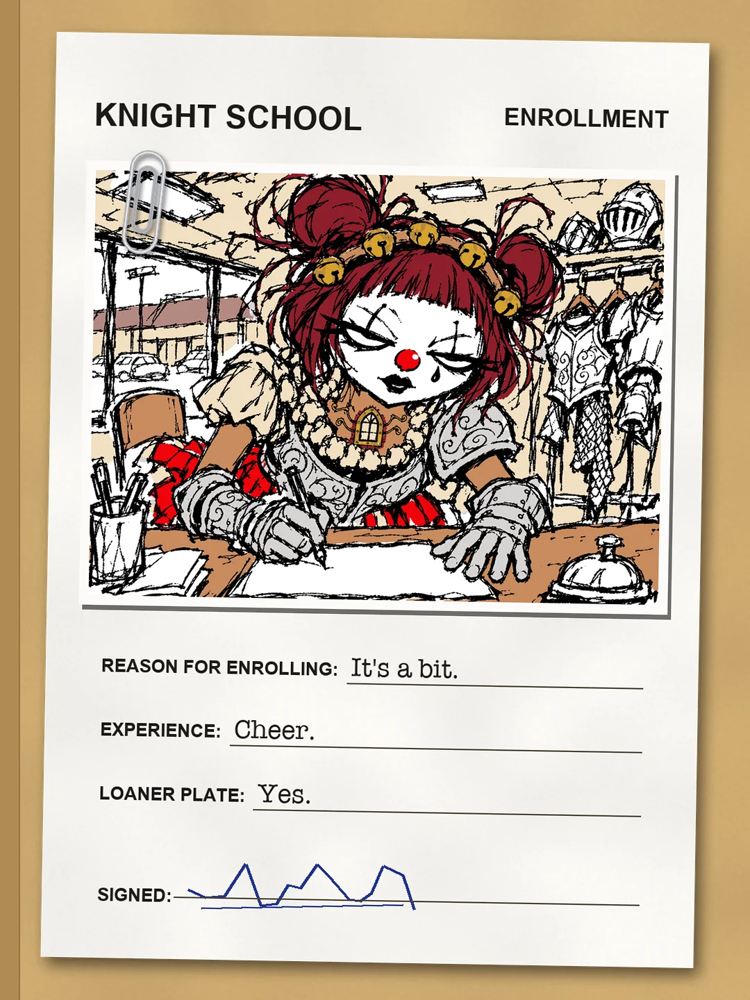
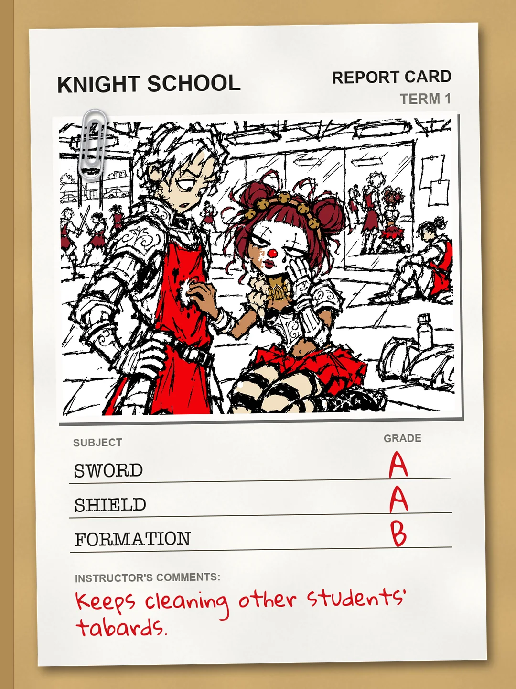
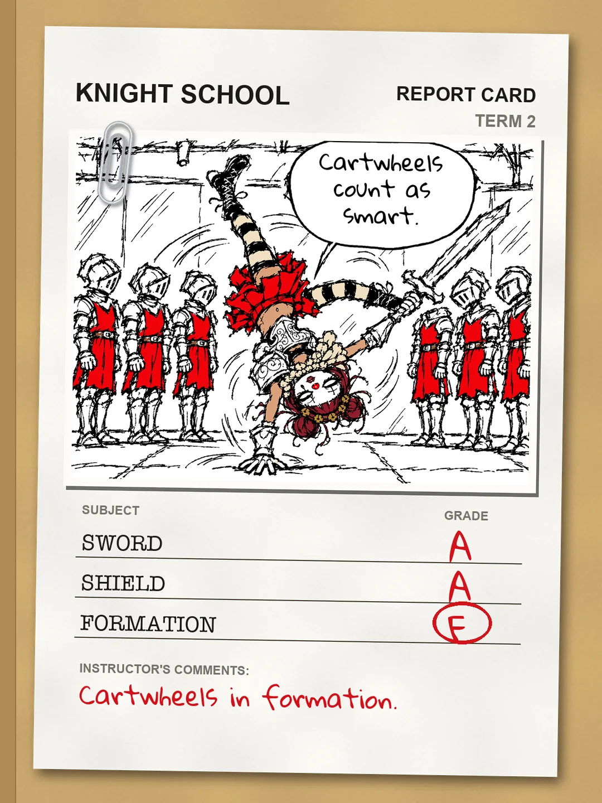
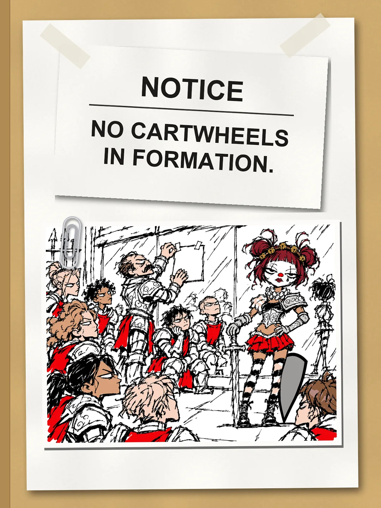
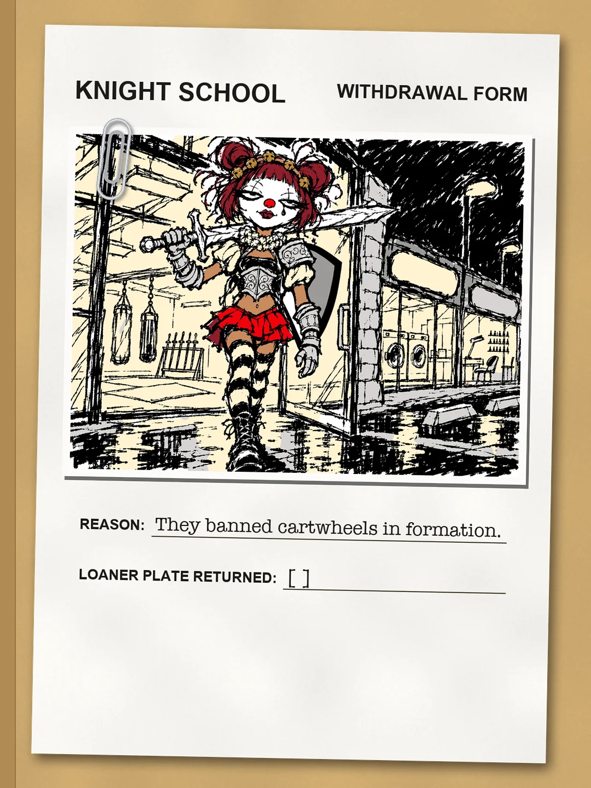
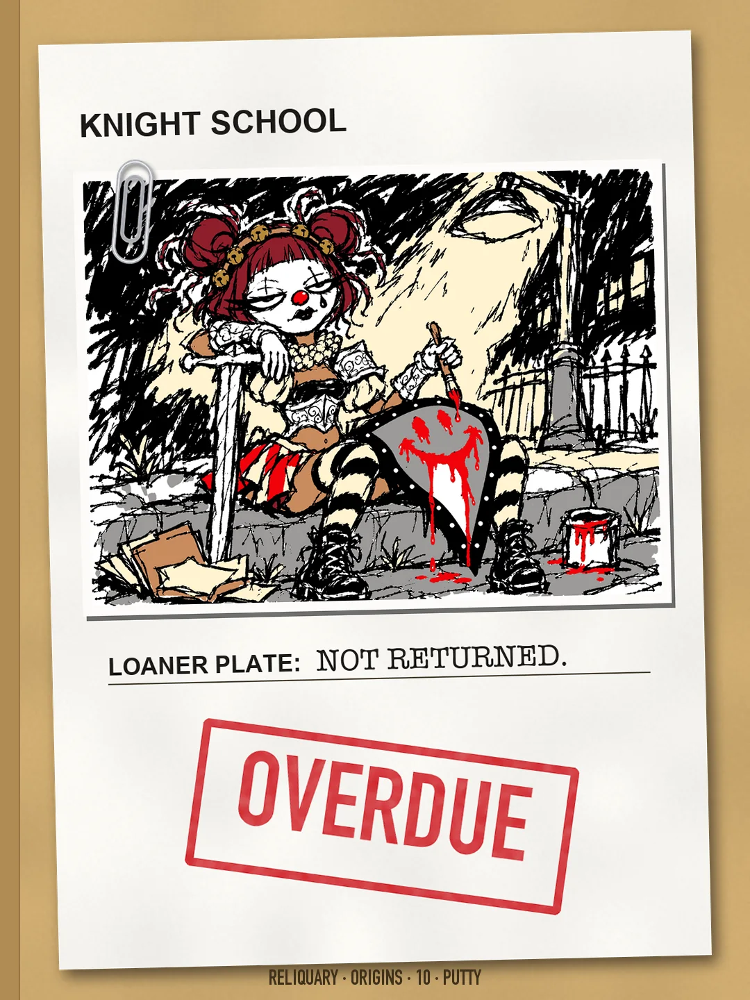
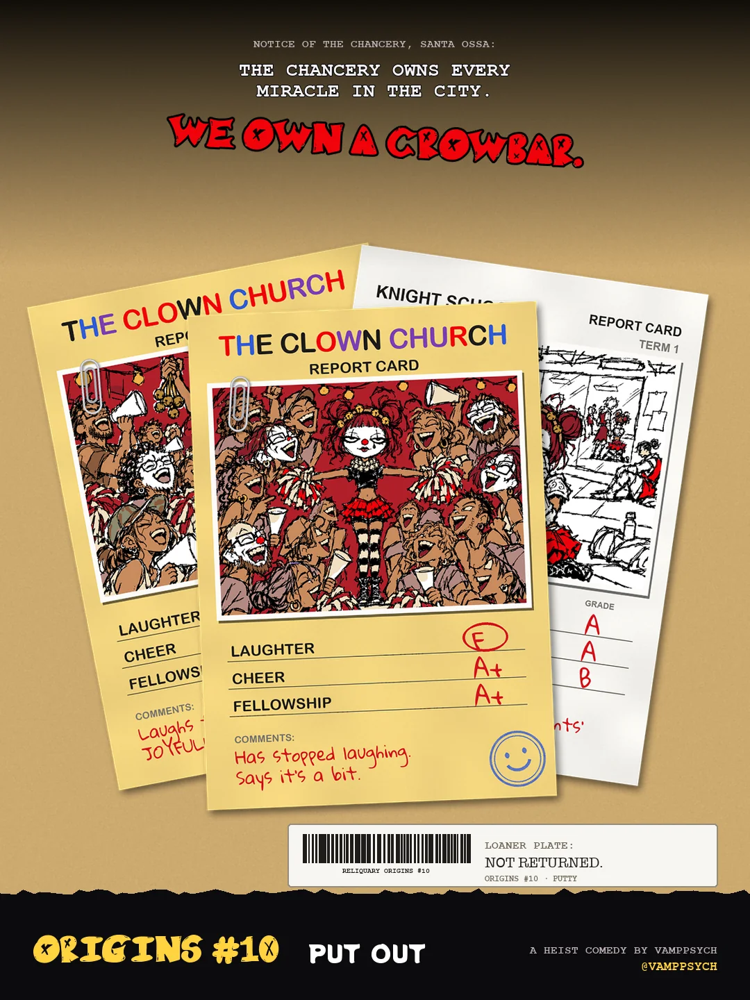
A MANHWA · ORIGINS #10
PUTTY · PUT OUT
the one rule is that you laugh 🔔
The cover, 10 pages from her transcript folder, the back. Read it top to bottom.












END OF ORIGINS #10
She kept the loaner plate. That's why none of it matches.